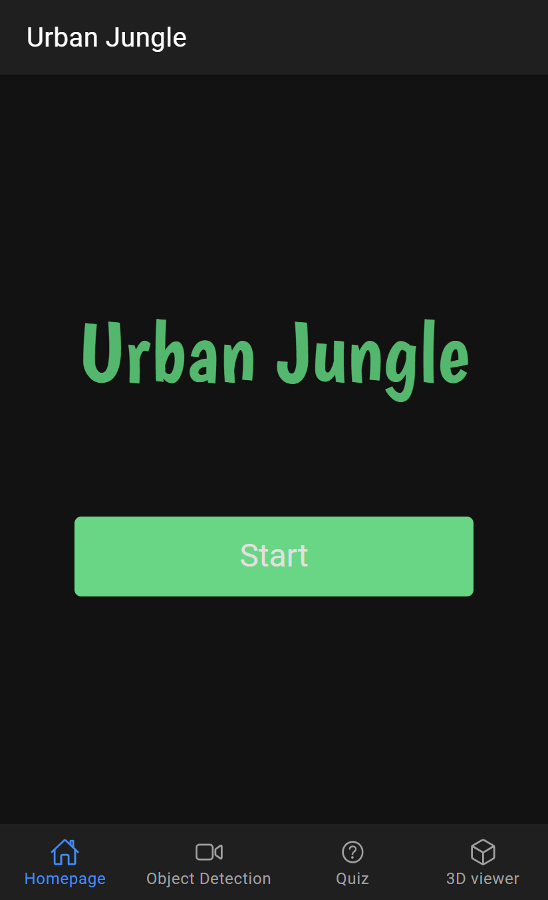
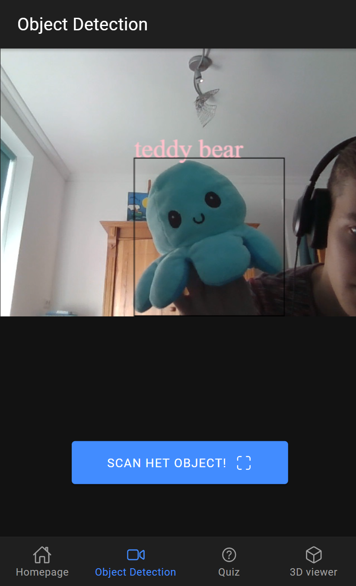
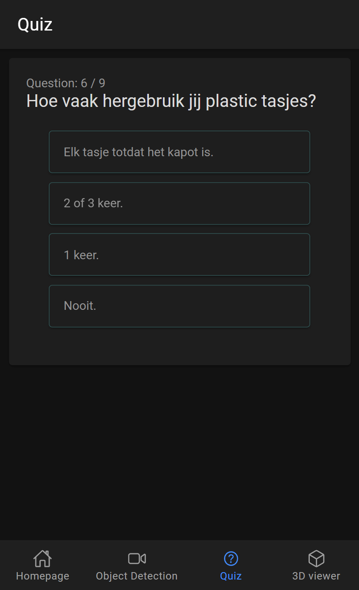
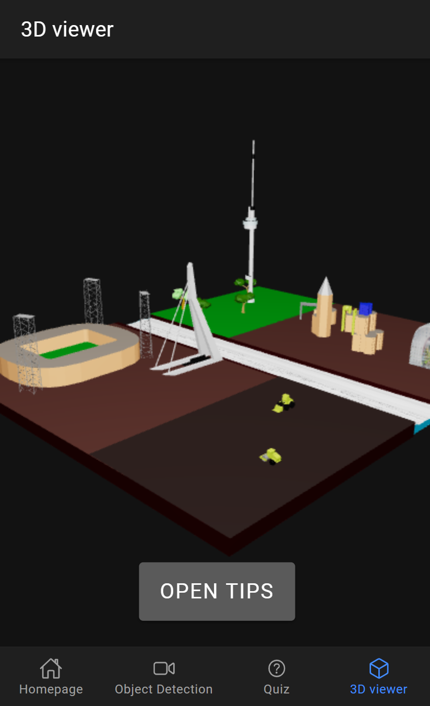
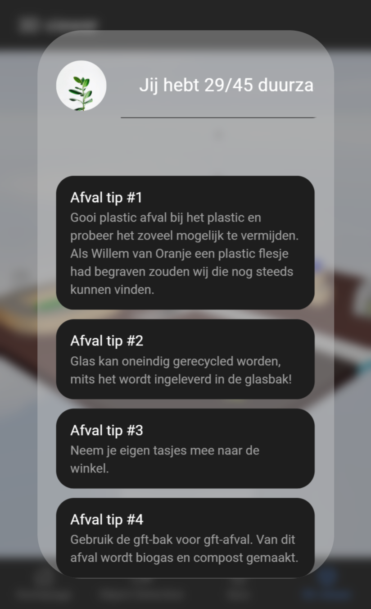

This application is the result of a 16 week project with the goal to make a positive impact on sustainability in Rotterdam.
Urban Jungle tries to make its users reflect on and confront their current sustainability
and provides help to improve it.
The app lets the users scan an object and makes a quiz based on that object.
Afterwards the users see a 3D model of Rotterdam adjusted to their own sustainability.
The app provides tips to help the users improve their sustainability.
I worked on development of the quiz, 3D viewer and overall styling.
I did research on the motivations to live sustainable, set up a usability test and made a rapport of that test.
Besides that I worked with my team on other project related stuff, like the Business Model Canvas, Empathy Map, Persona, Customer Journey and more.
We used React and Ionic to make a Progressive Web App. This means it can be build as a webapp and a native app.
I worked with Three.js to load the 3D models.
The models were made in Blender and the object detection uses TenserFlow.js and the model Coco SSD.
GitHub -
Application
x
    